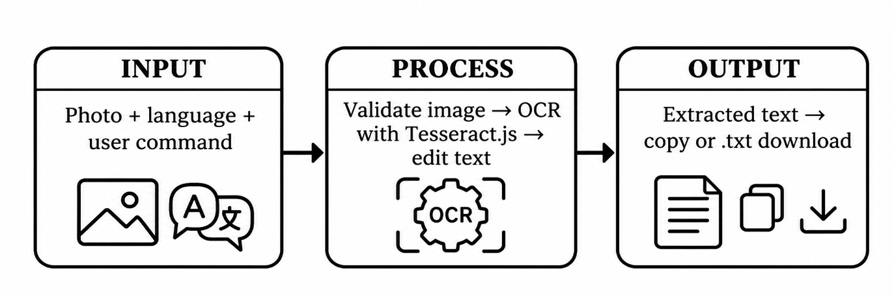
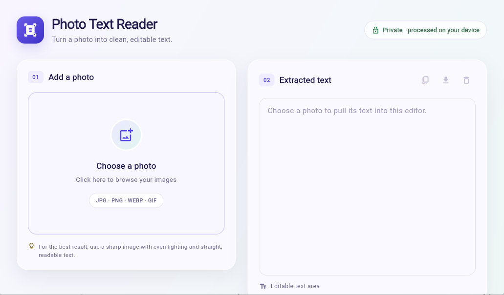
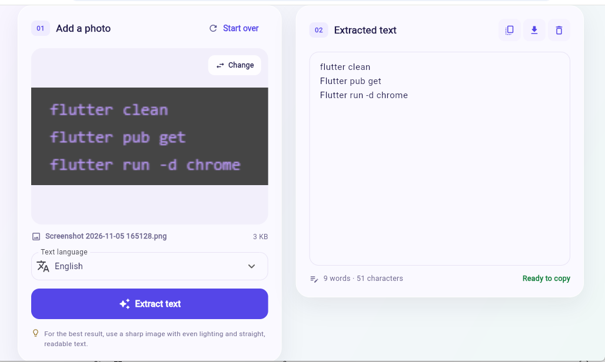
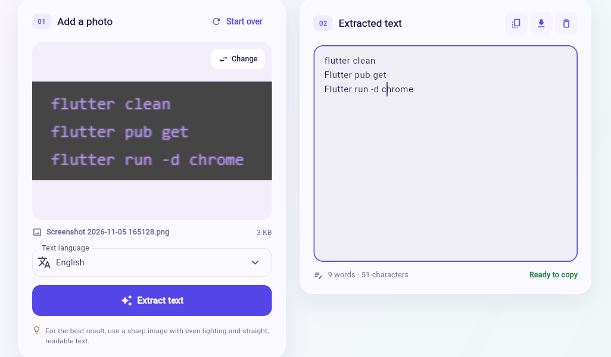
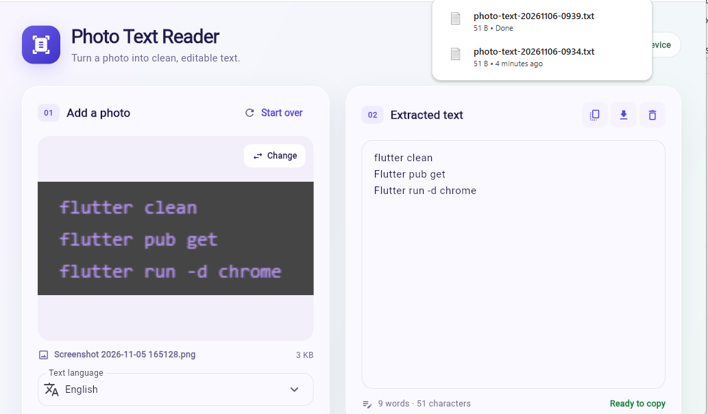

What works
The features that passed the tests: adding photos and PDFs, reading text with OCR, editing the result, translating it, and copying or downloading it as a Word document.
A browser-based system for turning photographed text into editable digital text
| Project name | Photo Text Reader |
|---|---|
| Name | Stephen Mark O. Maluto |
| Course | Multimedia |
| Date | November 2026 |
What problem the system solves, who it helps, and what it sets out to do.
Text that appears in printed documents, handwritten notes, signs, and learning materials is often trapped inside a picture. Retyping it by hand is slow, tiring, and prone to mistakes, and the person must retype the same content again whenever it is needed in a different document.
The system is for students who need to digitize notes and handouts, teachers who prepare learning materials, office staff who process printed forms and records, and anyone who needs the text from a photo without retyping it.
Photo Text Reader lets a user add a photo or a PDF, automatically recognize the words in it using optical character recognition (OCR), review and correct the result, optionally translate it, and then copy or export the text as an editable document. The goal is to make the same text usable again in minutes instead of retyping it.
The input, the internal process, and the output of the system.
The user opens the application in a web browser, chooses the language of the text, and adds photos or PDF files through the file picker, the camera, or by dragging them onto the drop zone. Each page is prepared and read one at a time, and its recognized text appears in its own editable result card. The user can then copy the text, translate it, or download everything as a .docx file. Everything runs inside the browser: there is no application server, database, or user account.
| Input | Process | Output |
|---|---|---|
| A photo or PDF page | The file is read, images are re-encoded as JPEG (up to 1800 px), and PDF pages are rasterized | Page thumbnail and preview in the workspace |
| Language selection | The chosen language is matched to an OCR language code and the reader for that language is loaded | A language-specific recognition request |
| Read command | The image is converted to grayscale, thresholded, and tried in three variants; the best-scoring result is kept | Recognized text in a per-page editable field |
| Translation target and command | Each page's text is split into chunks and sent to a translation service | Translated text shown beneath the original |
| Copy or export command | The text is written to the clipboard, or packed into a Word document in the browser | Copied text or a downloaded .docx file |
Up to 20 pages can be added per batch, and only the first 10 pages of each PDF file are used.

Screenshots of the main screens and steps of the running application.


The result of reading, reviewing, and exporting the pages.


What was tried, what was expected, and what actually happened.
Tests 1 to 4 check the main features of the system. Test 5 compares the system with the old manual way of doing the same task, which is retyping the text by hand.
| Test | What you tried | Expected result | Actual result | Pass or Fail |
|---|---|---|---|---|
| Test 1 | Add a clear photo of a printed page | Page is added, a thumbnail and preview appear, and reading starts | Page was added, the thumbnail appeared, and OCR started automatically | Pass |
| Test 2 | Read an English printed page and check the extracted text | Recognized text appears in the editable field | The text appeared and could be edited directly | Pass |
| Test 3 | Change the recognition language and read the pages again | Recognition runs again using the newly selected language | Pages were marked for re-reading and processed with the new language | Pass |
| Test 4 | Edit the text, then use Copy and Download .docx | Edited text is copied and a Word document is downloaded | The edited text copied and a dated .docx file downloaded with each page |
Pass |
| Test 5 (comparison) |
Extract the text of one clear printed page with the system, then retype the same page by hand | The system is faster and produces fewer typing mistakes than manual retyping | The system finished the page in well under a minute, while manual retyping took several minutes and introduced typing errors | Pass |
For Test 5, the same source image was used for both methods and the final text was compared with the original. Exact timings depend on the computer and on image quality.
What works, what does not work, and what would come next.
The features that passed the tests: adding photos and PDFs, reading text with OCR, editing the result, translating it, and copying or downloading it as a Word document.
Recognition is not perfect for blurry or low-contrast images. The reader needs internet access the first time it loads, and it needs a connection for translation. Only the first 10 pages of a PDF are read.
Add offline support so the reader works without a connection, improve accuracy on poor photos, allow larger batches and full PDFs, and add clearer error messages for unreadable pages.
Photo Text Reader meets its goal: it turns the words inside photos and PDF pages into editable, translatable, and downloadable text. The five tests cover the main features and confirm that the system works, while the comparison test shows it is faster and less error-prone than retyping by hand. The remaining limits are mostly about image quality and network access, which are the best targets for the next version.